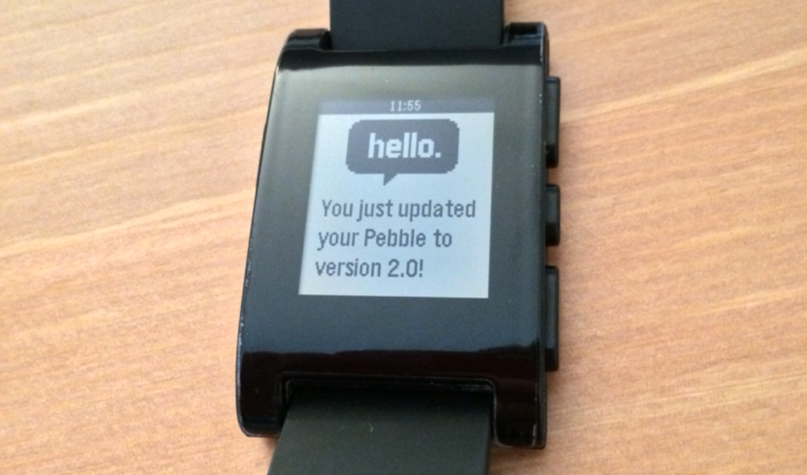

Cylon.JS: La evolución de las plataformas para robótica, escrito en JavaScript
cylonjs.com
Buenos días
Mi nombre es Edgar Silva
Programador
@hybrid_group
hybridgroup.com
kidsruby.com
Robótica en JavaScript
Internet de las cosas
Computación física? (Physical Computing)
Tecnologia usable? (Wearable Technology)
Realidad aumentada (Enhanced Reality)
Google, Samsung, Sony, Microsoft, Intel...
Google glass and Google Wear, la compra de NEST

Google glass
La compra de NEST
Dispositivos para fitness
Fitbit Flex
Nike Fuelband

Smartwatches, relojes inteligentes
Pebble Watch

Samsung Gear
El futuro ya esta aquí, solamente no esta distribuido de la misma manera.
The future is already here, it's just not very evenly distributed
William Gibson
Un framework para robótica y computacion física.
RobotOps - DevOps para robots
robotops.com
Soporte para multiples plataformas
Diferentes dispositivos de hardware
Grupos de robots, enjambres
Todo al mismo tiempo!

Cylon.js Architecture
Robótica impulsada por pruebas
(TDR - Test Driver Robotics)
Interface de linea de comandos
(CLI - Command Line Interface)
gort.io

Cylon.js API
Demostración!
Arduino
Ejemplo "Hola mundo!" de la robotica, encender un LED, "el programa blink!"
var Cylon = require('cylon');
Cylon.robot({
connection: {
name: 'arduino',
adaptor: 'firmata',
port: '/dev/ttyACM0'
},
device: {
name: 'led',
driver: 'led',
pin: 13
},
work: function(my) {
every((1).second(), my.led.toggle);
}
}).start();
Tessel
var Cylon = require('cylon');
Cylon.robot({
connection: {
name: 'tessel',
adaptor: 'tessel',
port: 'LED'
},
device: {
name: 'led',
driver: 'led',
pin: 2
},
work: function(my) {
every((1).second(), my.led.toggle);
}
}).start();